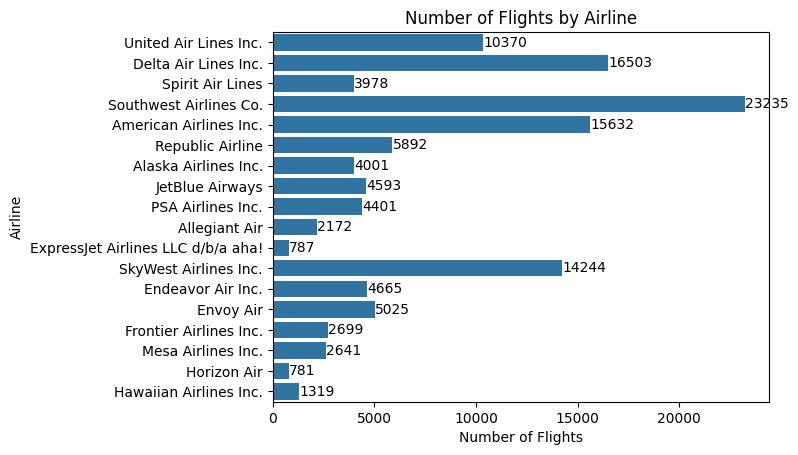
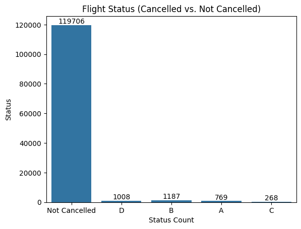
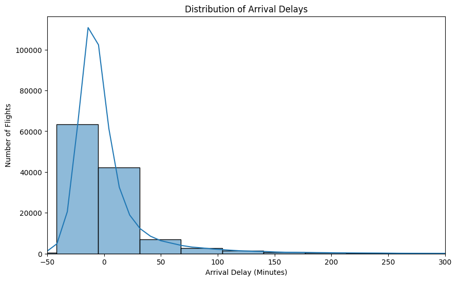
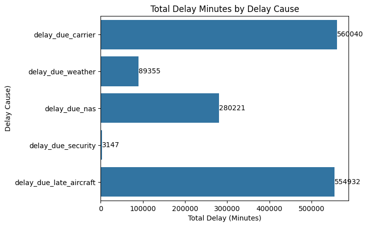
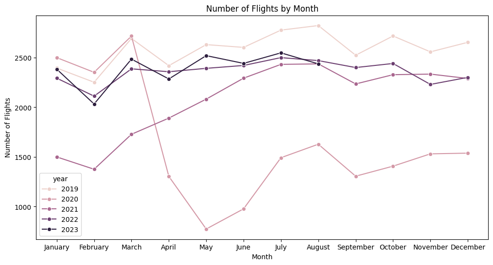
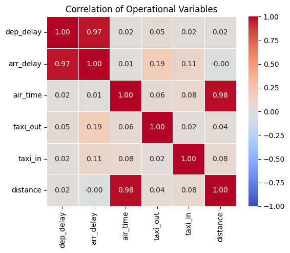

Business Background
Airlines operate complex networks involving aircraft, crews, airports and flight schedules. Delays and cancellations can disrupt these networks, increase operating costs and negatively affect passenger satisfaction.
Data Analytics Project
An end-to-end data analytics project analysing U.S. domestic airline operational performance from 2019 to 2023 using Python and MySQL. The project combines data cleaning, exploratory data analysis, SQL analysis and evidence-based recommendations to identify delay patterns, cancellation trends and opportunities to improve operational reliability.
Airlines operate complex networks involving aircraft, crews, airports and flight schedules. Delays and cancellations can disrupt these networks, increase operating costs and negatively affect passenger satisfaction.
Airline decision-makers need greater visibility into the causes and patterns of operational disruption. Without analysing historical flight data, recurring issues across airlines, airports, routes and seasons may remain difficult to identify.
Analyse airline operational data to evaluate delay and cancellation performance, identify major disruption drivers and develop data-driven recommendations to improve operational reliability.
The Flights Sample 3M dataset contains approximately three million U.S. domestic flight records covering 2019 to 2023. It includes airline, airport, route, schedule, cancellation and delay-cause information.
Step 1
Used Python and Pandas to inspect the dataset, remove duplicate records, handle missing values and prepare the operational fields for analysis.
Step 2
Used Matplotlib and Seaborn to examine airline flight volumes, cancellations, delay distributions, delay causes, monthly trends and variable correlations.
Step 3
Imported the cleaned dataset into MySQL and developed queries using aggregation, conditional aggregation, grouping, filtering and percentage calculations.
Step 4
Interpreted the findings across airlines, airports, routes and seasonal periods before developing practical, evidence-based business recommendations.
Compares flight volumes across airlines to show the relative scale of each carrier's operations within the dataset.

Compares completed and cancelled flights to provide an overview of cancellation performance across the dataset.

Examines the distribution of arrival-delay minutes and highlights the presence of extreme operational disruptions.

Compares total delay minutes attributed to carrier, late-aircraft, National Airspace System, weather and security causes.

Displays changes in monthly flight activity between 2019 and 2023, including the decline during 2020 and the subsequent recovery.

Shows relationships between operational variables, including the strong association between departure and arrival delays.

Allegiant, JetBlue and Frontier recorded the highest average arrival and departure delays, indicating weaker schedule reliability than other airlines.
ExpressJet, Allegiant and Mesa recorded the highest cancellation rates among the airlines analysed.
Carrier-related and late-aircraft delays contributed the greatest total delay minutes, followed by National Airspace System delays.
June recorded the highest average delays, while April recorded the highest cancellation rate. November had the lowest cancellation rate.
Newark appeared in each of the three routes with the highest cancellation rates, making these routes useful priorities for further operational investigation.
Hawaiian, Delta, Horizon, Alaska and Endeavor demonstrated the strongest overall performance across cancellation, delay and schedule-adherence measures.
Review crew scheduling, aircraft turnaround, maintenance planning and disruption recovery processes to reduce delays within airline control.
Conduct route-level operational reviews to identify recurring causes of cancellations and delays on the most disrupted services.
Increase staffing, reserve aircraft availability and contingency planning during periods with historically high delays or cancellation rates.
Compare airline performance using multiple indicators, including cancellation rate, departure delay and schedule adherence, rather than relying on one KPI.
Read the complete analysis, findings, recommendations and conclusion.
Review the Python code used for data cleaning, exploratory analysis and visualisation.
Review the MySQL queries used to answer the project's operational business questions.
Access information about the flight dataset used for the analysis, subject to its original licence.
The project uses the Flights Sample 3M dataset sourced from Kaggle. The flight data was originally published by the U.S. Department of Transportation Bureau of Transportation Statistics.